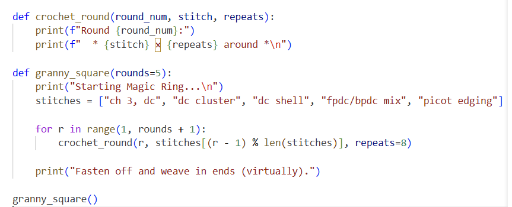

It's Nice To Meet You!
Hello and welcome to my project portfolio website! This lovely website I created is to showcase my skills and talents. I have two loves in life, crochet and coding.
What better way to show off the those things than through this website!

Things to check out:
- To learn more about my crochet projects go here: Crochet
- To learn more about my coding skills go here: Programming
- Want to know more about who I am as a person, go here: About Me
- Want to contact with me? Go here: Contact